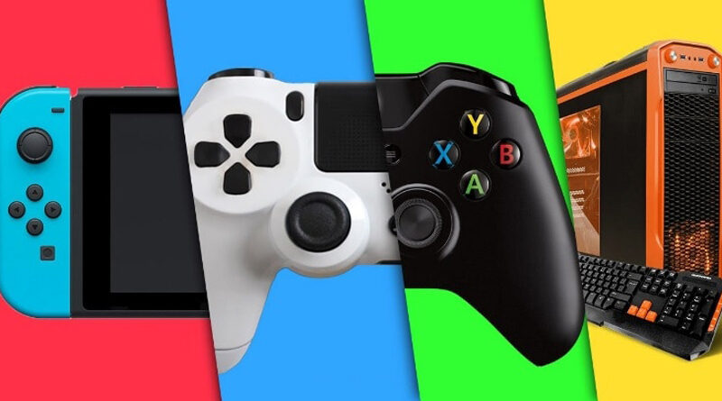
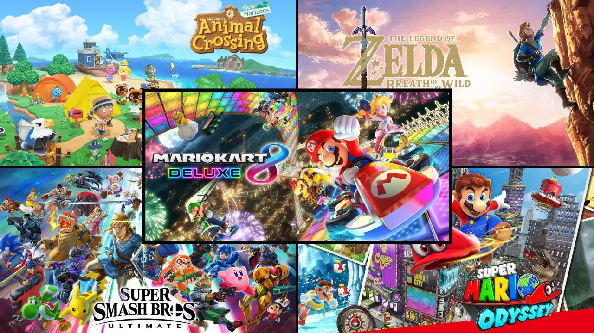
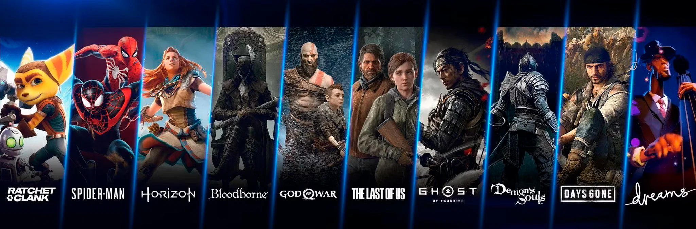

Las plataformas de videojuegos son la puerta a un universo de entretenimiento digital. Pero el concepto es amplio, porque una plataforma puede ser una PlayStation física o puede ser totalmente online como Steam. Vamos a descubrirlas y al final del artículo te enseñaremos las dos más potentes.
¿Qué es exactamente una Plataforma de Videojuegos?
Bueno, no tiene mucho misterio. Una plataforma de videojuegos es un sistema que te permite descargar, jugar, o descargar y jugar a videojuegos, ya está. Puede ser un dispositivo físico, como una consola o un PC, o una plataforma digital, como la propia de PlayStation+, Xbox Pass, Steam, Epic Games Store…
Las plataformas de videojuegos te permiten:
Comprar y descargar juegos: puedes encontrar una amplia variedad de juegos para diferentes plataformas, desde clásicos hasta los últimos lanzamientos.
Jugar en línea: conéctate con amigos o jugadores de todo el mundo para disfrutar de partidas multijugador.
Compartir contenido: comparte tus logros, experiencias y opiniones con la comunidad de jugadores.
Acceder a servicios adicionales: algunas plataformas ofrecen servicios adicionales como streaming de video, chat y almacenamiento en la nube.
¿Qué tipos de plataformas de videojuegos hay?
Existen dos tipos principales de plataformas:
1. Plataformas de videojuegos físicas:
Consolas: dispositivos electrónicos diseñados específicamente para jugar videojuegos. Algunos ejemplos son PlayStation 5, Xbox Series X/S y Nintendo Switch.
PC: ordenadores personales con hardware potente que se utiliza para jugar videojuegos.
Máquinas arcade: las «antiguas» máquinas recreativas.

2. Plataformas de videojuegos digitales:
Tiendas digitales: plataformas en línea donde se pueden comprar y descargar videojuegos, como Steam, Epic Games Store y PlayStation Store.
Servicios de suscripción: plataformas que ofrecen acceso a una biblioteca de juegos por una tarifa mensual, como Xbox Game Pass y PlayStation Plus.
Juegos en la nube: plataformas que permiten jugar videojuegos sin necesidad de descargarlos o instalarlos, transmitiendo el juego en tiempo real a través de internet.
Consolas de Videojuegos
Las consolas de videojuegos son dispositivos que podemos montar en nuestra casa y conectarlos al smart TV para poder disfrutar de increíbles historias a través de una amplia diversidad de juegos. Entre las principales máquinas tenemos a PS4, PS5, Xbox Series X, Xbox Series S y Nintendo Switch.
Si planeas armar tu espacio de entretenimiento, en esta nota te contaremos acerca de las características de las distintas consolas de juegos que puedes conseguir, así como los videojuegos más populares en Perú para cada una de ellas.
¿Cuáles son las mejores consolas de videojuegos?
Actualmente, los videojuegos en Guatemala se pueden jugar en las consolas PlayStation 4, PlayStation 5, Xbox Series X, Xbox Series S y Nintendo Switch en sus diferentes modelos. Otro detalle a mencionar es que cada plataforma cuenta con una lista de juegos exclusivos que puedes aprovechar para pasar un buen rato en solitario o con amigos.
Nintendo Switch
Nintendo Switch es una de las consolas híbridas más populares en la actualidad. Este dispositivo fabricado por la compañía nipona Nintendo llega entre modelos y su catálogo de videojuegos es bastante amplio.
Su característica principal es que puedes usarla como una consola portátil para disfrutar de juegos como The Legend of Zelda: Breath of the Wild en cualquier lugar o poner la pantalla sobre el dock para convertirlo en una consola de sobremesa y conectarlo al televisor.
La caja incluye la pantalla de 6,2 pulgadas, los Joy Con izquierdo y derecho, cable HDMI, un Dock que ofrece 3 conexiones USB y una HDMI para conectar a una televisión o proyector. Su memoria es de 32 GB de almacenamiento, pero puedes ampliarla a través de una ranura para tarjetas microSD de hasta 2 TB.
Nintendo Switch OLED
Es la más nueva versión de la consola híbrida de Nintendo. Esta ofrece una pantalla con tecnología OLED de 7 pulgadas, los mandos Joy Con, un dock que incluye puerto LAN para conexión por cable, almacenamiento interno de 64GB y los modos TV, semi portátil y portátil.
El modo portátil es cuando tienes los Joy Con conectados a la pantalla, mientras que en el semi portátil puedes usar el soporte de la consola para compartir pantalla, es perfecto para juegos multijugador. Por último, en el modo TV debes colocar la consola Nintendo Switch en la base y disfrutar de tus videojuegos favoritos en alta definición en tu televisor.
Este dispositivo está a la venta en varios diseños, pero uno de los más populares entre los guatemaltecos es la Nintendo Switch OLED blanco.
Nintendo Switch Lite
La Nintendo Switch es la consola de videojuegos portátil del momento. Esta llega con los Joy Con integrados a la consola, por lo que no tenemos la opción de pantalla compartida ni un dock que nos permite jugar títulos en alta resolución a través de la TV.
A pesar de ello, esta máquina ofrece un modo local en la que puedes vincular hasta ocho consolas Nintendo Switch y Nintendo Switch Lite para disfrutar de distintos títulos multijugador, como Super Smash Bros.
Entre los mejores juegos para Nintendo Switch encontramos los siguientes:
1. The Legend of Zelda Breath of the Wild
2. Super Smash Bros Ultimate
3. Mario Party Superstars
4. Animal Crossing New Horizons
5. Super Mario Bros U Deluxe
6. Cuphead
7. Pokémon Violet
8. Pokémon Scarlet
9. Pokémon Shining Pearl
10. Pokémon Legends Arceus
11. Pokémon Scarlet
12. Super Mario Odyssey
13. Super Mario Maker 2
14. Fire Emblem Warriors: Three Hopes

PlayStation 4
Conocida como PS4, se trata de la consola de pasada generación de Sony. Se lanzó en 2013 y desde entonces se ha convertido en la favorita de miles de gamers guatemaltecos. La máquina llega en dos versiones Slim que se diferencian por su capacidad de almacenamiento.
Un modelo tiene 1 TB de memoria de almacenamiento, mientras que la otra ofrece 500 GB. En la caja encontramos un cable HDMI para conectarlo al televisor, un auricular para utilizar el chat por voz durante las partidas, el mando DualShock 4 y su cable para cargarlo.
Entre sus principales videojuegos exclusivos para PlayStation 4 encontramos a los siguientes:
1. The Last of Us
2. Marvel's Spider-Man
3. Ghost of Tsushima
4. God of War (2018)
5. God of War Ragnarok
6. Horizon Zero Dawn
7. The Last of Us Part II
8. Days Gone
9. Spider-Man Miles Morales
10. Gran Turismo 7
11. Horizon Forbidden West

PlayStation 5
Si lo que buscas es una consola de videojuegos de última tecnología, es posible que estés pensando en una PS5. Se trata de la más reciente máquina de Sony que llega en dos modelos: PlayStation 5 Standard Edition y PlayStation Digital Edition.
La diferencia entre una PS5 Standard Edition y la PS5 Digital Edition está en que la primera cuenta con un lector de discos Blu-Ray, mientras que la otra solo es capaz de correr juegos digitales.
En la caja de cada una de estas plataformas encontramos la consola, una base, los cables para conectarlo al televisor inteligente y el mando DualSense. La plataforma llega en color blanco y su carcasa es removible, por lo que puedes personalizarla a tu gusto.
Una de las principales características de la PlayStation es que ambas cuentan con la función de retrocompatibilidad. Esto quiere decir que el dispositivo tiene la capacidad de funcionar con casi todos los juegos de PS4; además, algunos de los títulos tienen mejoras en PS5, como mayor fluidez y resolución.
Es importante precisar que esta funcionalidad se puede aprovechar a través de juegos físicos y digitales. Por otra parte, también puedes complementar tu compra con otros accesorios gamers de la firma como auriculares inalámbricos PS5 Pulse, una cámara HD, y un control remoto blanco.
Xbox Series X
Por el lado de Microsoft tenemos la potente consola Xbox Series X, que se caracteriza por tener un lector de discos Blu-Ray, 1 TB de almacenamiento y da la posibilidad de correr juegos con resoluciones en 4K.
Por otro lado, de esta potente consola de videojuegos es que también cuenta con la función de retrocompatibilidad, la cual le permite correr juegos de Xbox One a través de su lector de discos o de manera digital. Estos también reciben un upgrade en sus gráficas.
Xbox Series S
Xbox Series S es otra de las consolas de Xbox que podemos encontrar en el mercado guatemalteco. Se diferencia de la Xbox Series X por ofrecer 512 GB SSD y no contar con un lector de discos Blu-Ray, por lo que es una máquina exclusiva para videojuegos digitales.
Su función de retrocompatibilidad también le permite correr juegos de Xbox One, sin importar que los títulos sean de esta consola, de Xbox 360 o la primera consola de Microsoft. Eso sí, todas de manera digital y también reciben un upgrade en sus gráficas.